01目次
はじめに
第1章 なぜ40代は「このままでいいのか」と迷うのか
1-1. 仕事への不安は40代の「普通の反応」
1-2. お金・健康・やりがい・老後──4つの不安が重なる時期
1-3. 「転職もしない、起業もしない」でいいのか
1-4. 人生後半の地図を描き直す
第2章 お金の不安を整理する
2-1. 老後に必要なお金の現実
2-2. 親の介護費用と自分のキャリアの両立
2-3. 「今の収入」を守りながら増やす現実的な方法
2-4. 副業・スモールビジネスという第3の選択肢
第3章 やりがいと健康を守りながら働き続ける
3-1. 40代の「疲れ」はキャリアのサインかもしれない
3-2. 今の仕事でやりがいを取り戻す方法
3-3. 健康を資本にする──体とメンタルのメンテナンス
3-4. 「週100%」から「週70%+α」という働き方
第4章 次の選択肢を、今の仕事を続けながら育てる
4-1. スキルの棚卸し──40代が気づいていない自分の強み
4-2. 社内での再定義──ポジション・役割の見直し方
4-3. 外に小さく種を蒔く──副業・ネットワーク・発信
4-4. 5年後の自分へのプロトタイプ計画
第5章 人生後半の「自分業」を始める
5-1. 「選択肢を持つ」ことが最大の安心感
5-2. 小さく始めて大きく育てる──スモールビジネスの現実
5-3. お金・健康・人間関係──3つのポートフォリオを整える
5-4. 10年後の自分に手紙を書く
おわりに
はじめに──「なんとなく不安」を言語化する
朝、通勤電車に乗りながら、ふと思うことはありませんか。
「このまま定年まで、同じように働き続けるのだろうか」
仕事は安定しています。
会社に大きな不満があるわけではありません。
給料も、周りと比べてとくに低いわけではない。
でも、なぜか胸の奥に小さなモヤがかかっている。
「このままでいいのだろうか」という感覚。
それを誰かに相談しようとすると、「贅沢な悩みだ」と言われそうで、口に出せずにいる。
でも、あなたは今、まさにその「ことばにならない不安」を抱えて、この本を手に取ってくださっているのではないでしょうか。
この本は、そういう人のために書きました。
転職を勧める本でも、起業を煽る本でもありません。
「今の仕事を続けながら、人生後半の選択肢を少しずつ育てていく」ための、現実的な地図です。
野村総合研究所の2025年の調査によると、40代・50代就労者の約4割が「ミッドライフクライシス」によって仕事のパフォーマンスが低下していると感じています。
また、別の調査では、40〜50代の約8割が「仕事への将来的な不安」を持ちながらも、転職意思は「なし」と答えていることが明らかになっています。
つまり、「変えたい」けど「大きく変えたいわけではない」。
その矛盾した気持ちは、あなただけのものではありません。
この本を読み進めながら、少しずつ頭の中を整理し、一歩だけ前に進む準備をしていきましょう。
02第1章 なぜ40代は「このままでいいのか」と迷うのか
── ミッドライフクライシスの正体と向き合い方
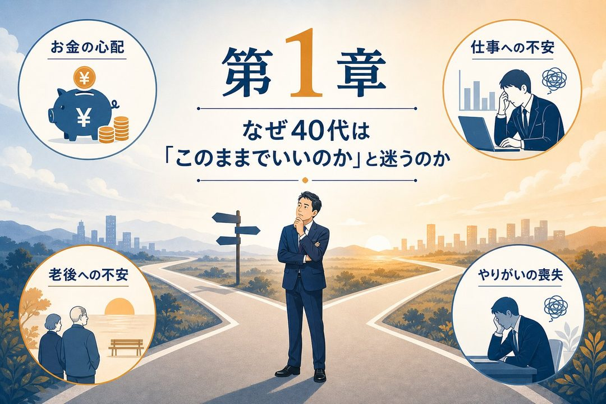
第1章 人生後半の分岐点
1-1. 仕事への不安は40代の「普通の反応」
「なんか最近、仕事に身が入らなくて」
40代のビジネスパーソンと話していると、こんな言葉を耳にすることがよくあります。
サボりたいわけではない。
体を壊したわけでもない。
ただ、以前のように「よし、やるぞ！」という気持ちが湧いてこない。
これは、実は40代特有の「正常な反応」です。
心理学では「ミッドライフクライシス（中年の危機）」と呼ばれる現象で、40代から50代前半に多くの人が経験します。
生物学的にも、この時期は脳と体のエネルギーが切り替わるタイミングです。
20代・30代は「可能性を広げる」フェーズ。
新しいことを覚え、挑戦し、失敗しても立ち上がれる体力と時間がある。
でも40代に入ると、少しずつ「選択肢を絞り込む」フェーズへと移行します。
「何でもできる」から「何をするか選ぶ」へ。
この切り替えがスムーズにいかないと、「なんとなく焦る」「なんとなく不安」という感覚が生まれます。
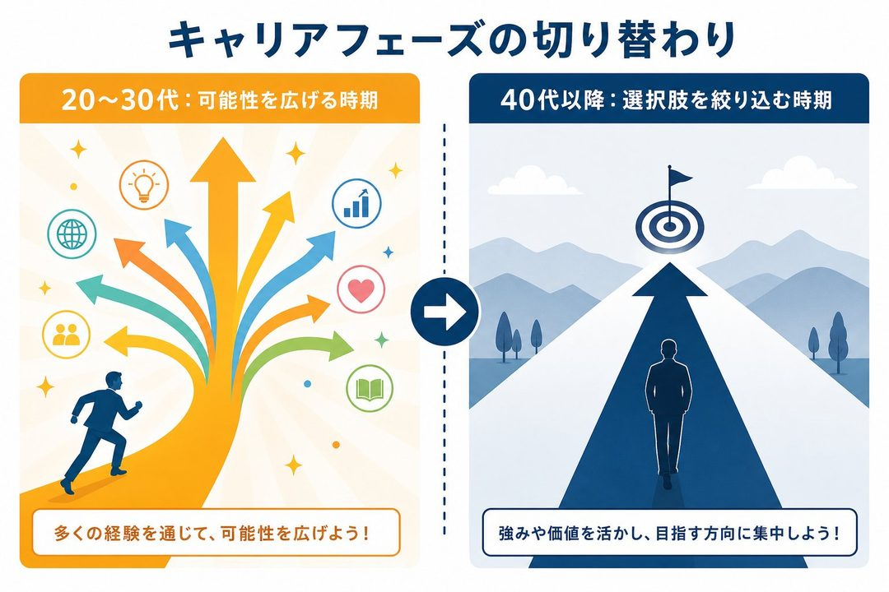
20〜30代と40代のキャリアフェーズの違い
重要なのは、この「モヤ」を「怠け心」と勘違いして自分を責めないことです。
むしろ、それは「次のステージへの準備信号」だと受け取ってください。
仕事への不安は、あなたが真剣に働いてきた証拠でもあります。
いい加減に生きてきた人は、こんな悩みを持ちません。
ここまで真剣に仕事と向き合ってきたからこそ、「このままでいいのか」という問いが生まれるのです。
1-2. お金・健康・やりがい・老後──4つの不安が重なる時期
40代が特に苦しい理由のひとつは、複数の不安が同時に押し寄せてくることです。
不安その① お金
老後2,000万円問題が話題になって以来、多くの人が「自分の貯蓄で大丈夫か」と不安を抱えるようになりました。
子どもの教育費、住宅ローン、老後資金。
全部を同時に考えると、頭がパンクしそうになります。
不安その② 健康
40代になると、「体の変化」を感じ始める人が増えます。
健康診断で初めて「要注意」の文字が出た、疲れが以前より取れにくくなった、集中力が続かなくなった。
「このまま働き続けられるだろうか」という不安は、40代で48.3%（SBI生命調査）と、他の年代より高い傾向があります。
不安その③ やりがい
「若い頃は仕事に燃えていたのに、今は惰性でやっている気がする」。
責任が増えた分だけ、純粋な「楽しさ」が減った。
あるいは、ずっと頑張ってきたのに、会社や部下から正当に評価されていないと感じている。
不安その④ 老後・親の介護
親が70代、80代になってきた。
認知症や体の不調が気になり始めた。
介護が現実的になってきたとき、「仕事とどう両立するか」「費用はどこから出すか」という問題が一気に浮上します。
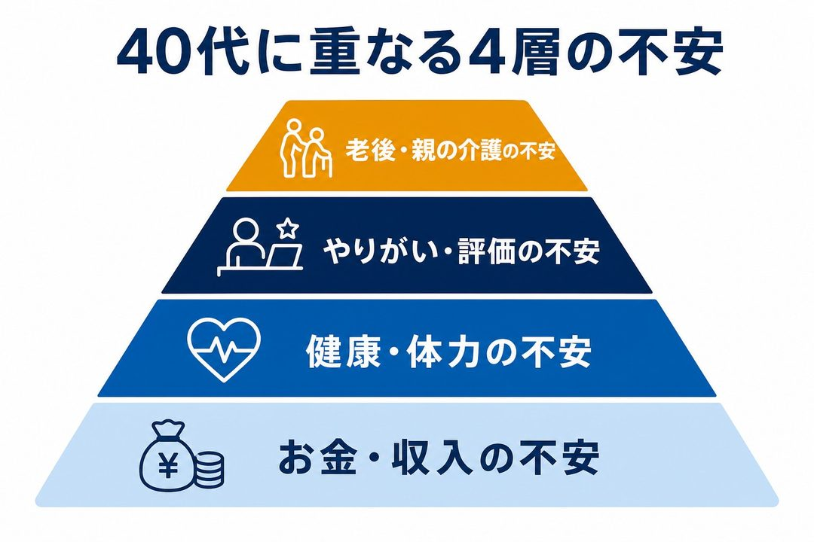
40代に重なる4層の不安
これらの不安が「同時に」やってくるのが、40代という時期の特徴です。
ひとつひとつは解決できる問題でも、全部が重なると「どこから手をつければいいかわからない」という状態になります。
この本では、それぞれの不安を章ごとに分けて丁寧に整理していきます。
全部を一気に解決しようとしなくていい。
まず「見える化」することから始めましょう。
1-3. 「転職もしない、起業もしない」でいいのか
「変化が必要だ」と感じた多くの人が最初に思い浮かべるのが、転職か起業です。
でも、40代でのキャリア転換には、20代・30代とは異なるリスクがあります。
転職のリアル
確かに、2025年の調査では40代後半以上の採用を増やしている企業は4割を超えています。
市場としては「ある」のです。
しかし、転職には体力と時間がかかります。
新しい職場への適応、人間関係の再構築、給与交渉。
家族がいれば、その影響範囲はさらに広がります。
「転職すれば解決する」と信じて転職したものの、「前の会社のほうが良かった」という話も珍しくありません。
起業のリアル
起業に憧れる気持ちはよくわかります。
「自分でやってみたい」「誰にも縛られずに働きたい」。
でも現実として、事業が軌道に乗るまでには平均2〜3年かかると言われ、その間の収入は不安定です。
住宅ローン、教育費、介護費が重なる40代に、この不安定さに耐えられるか──それが問いになります。
では、「転職もしない、起業もしない」という選択は、現実逃避なのでしょうか。
違います。
それは、「今の場所から、賢く動く」という選択です。
今の仕事を続けながら、少しずつ選択肢を育てる。
収入を守りながら、新しいスキルを積み上げる。
健康を維持しながら、人生後半の地図を描き直す。
この本が提案するのは、その「第3の道」です。
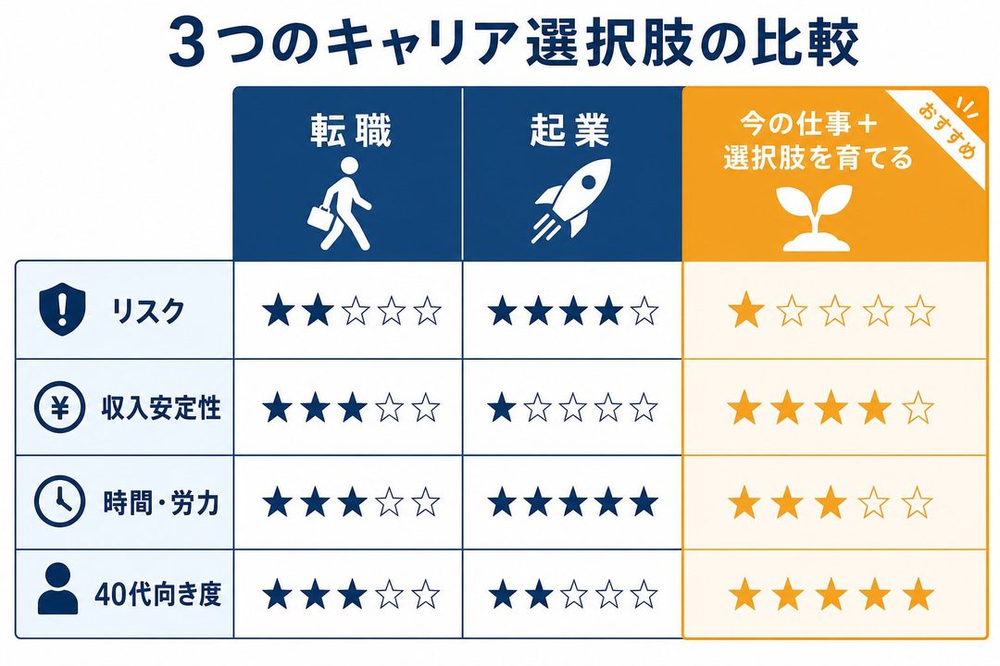
3つのキャリア選択肢の比較
1-4. 人生後半の地図を描き直す
「人生100年時代」という言葉が一般的になりました。
65歳で定年を迎えても、その後に20〜30年の人生が待っています。
つまり、「定年=ゴール」ではなく、「定年=折り返し地点のひとつ」に過ぎない。
この認識の転換が、人生後半の働き方を考える第一歩です。
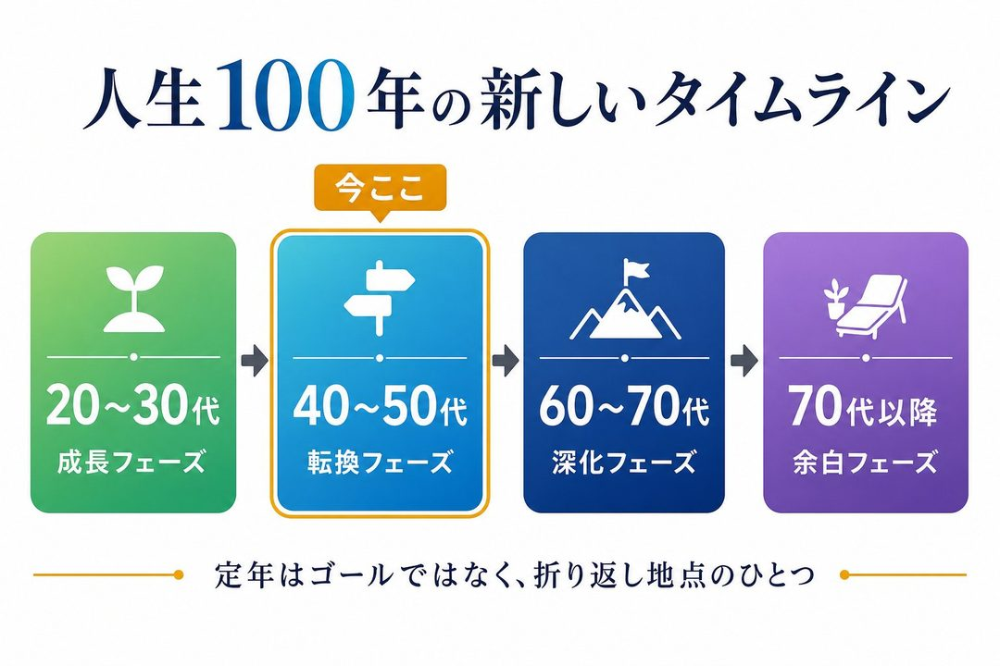
人生100年の時代の新しいタイムライン
40代は「転換フェーズ」の入り口です。
ここで「どんな選択肢を持っておくか」を考え始めることが、その後の20年・30年を大きく変えます。
逆に言えば、40代でこの地図を描き直さないと、60代・70代になってから「あのとき動いておけばよかった」と後悔するリスクがあります。
この章では、「なぜ迷っているのか」を理解してもらうことが目的でした。
次の章からは、具体的な不安を一つずつ整理していきます。
まずはお金の話から始めましょう。
03第2章 お金の不安を整理する──老後資金・介護・年収の現実
── 数字と向き合うことで「漠然とした恐怖」が消える
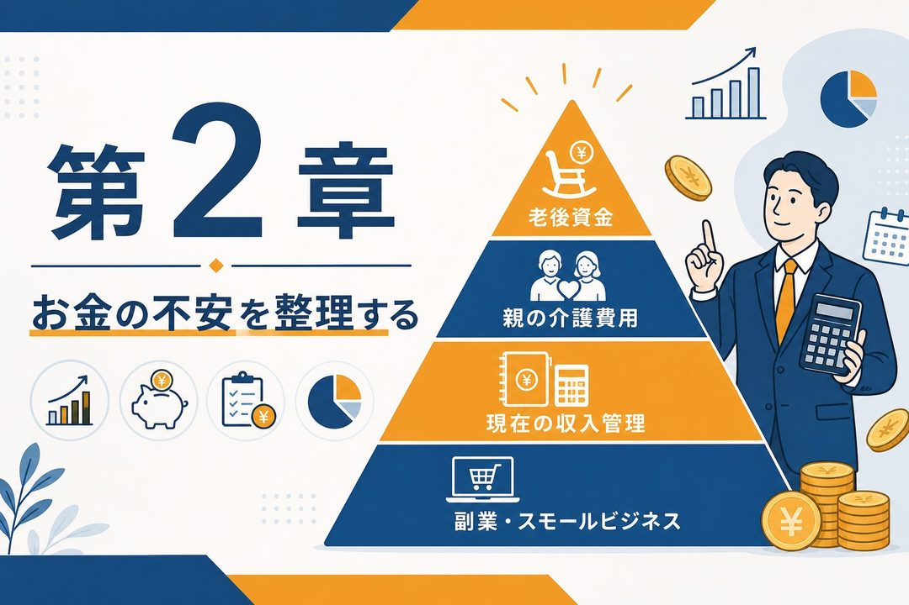
第2章 お金の全体像を整理する
2-1. 老後に必要なお金の現実──2,000万円問題の本当の意味
「老後2,000万円が必要」という言葉が、多くの人を不安にさせました。
でも、この数字の出どころを正確に理解している人は意外と少ない。
2,000万円問題とは何か
この数字は、金融庁が2019年に発表した報告書に登場したもので、「夫65歳、妻60歳の無職世帯が30年間生活するために、年金以外に必要な資金」を試算したものです。
つまり、前提条件がかなり特殊です。
働いていない夫婦が、年金だけで暮らした場合の不足分。
これが毎月約5万円として、30年間で約2,000万円になる、という計算です。
ポイントは「働きながら準備する」こと
重要なのは、「定年まで働き続けること」自体が最大の資産運用だということです。
同じ2,000万円を準備するにしても、45歳から20年かけて積み立てるのと、55歳から10年で積み立てるのでは、毎月の負担が2倍近く変わります。
今から少しずつ、月2〜3万円を長期積立するだけでも、20年後の安心は大きく変わります。
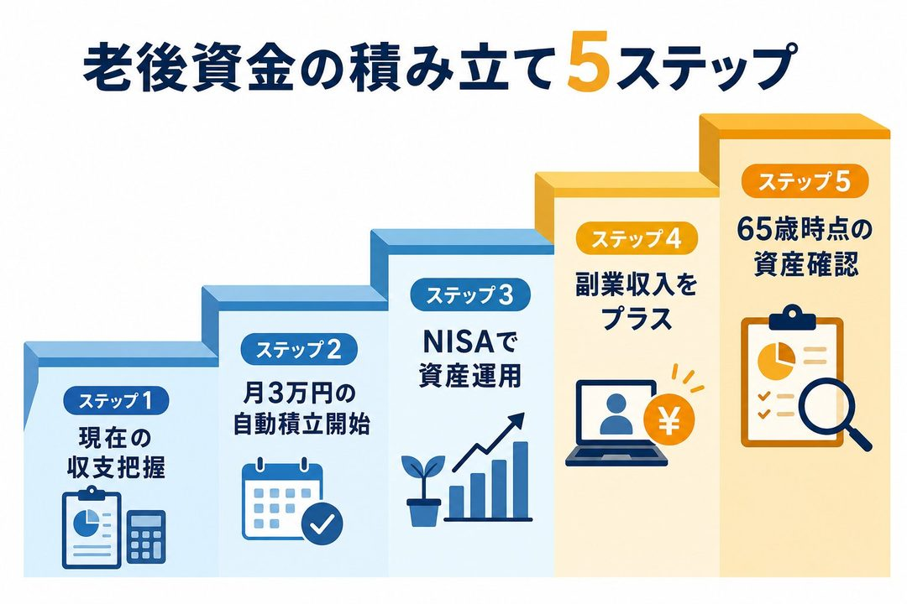
老後資金の積み立てステップ
「2,000万円」という数字に怯えるのではなく、「今日から何をするか」に集中する。
それが、お金の不安を解消する第一歩です。
2-2. 親の介護費用と自分のキャリアの両立
40代から50代にかけて、多くの人が直面するのが「親の介護問題」です。
アンケート調査によると、40〜50代の約半数（51.6%）が「親の介護が心配、または既に介護中」と答えています。
一方で、「介護の準備をしている」と答えた人はわずか1割。
「まだ先の話」だと思っているうちに、突然介護が始まるケースが多い。
介護費用の現実
介護費用は、どのような状態か、どのようなサービスを使うかによって大きく異なりますが、在宅介護の場合は月2〜5万円、施設入所の場合は月10〜20万円が目安とされています。
期間は平均で4〜5年間とも言われますが、長い場合は10年以上続くこともあります。
仕事と介護の両立
介護が始まったとき、多くの人が悩むのが「仕事との両立」です。
介護休業制度（最大93日）や介護休暇制度を活用することができますが、長期的には「どう仕事の量・時間を調整するか」を考えておく必要があります。
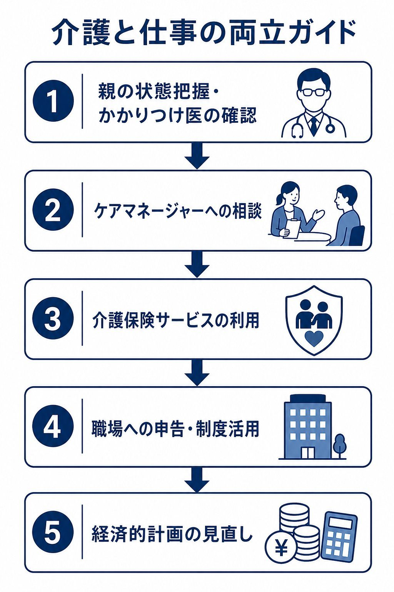
介護と仕事の両立ガイド
今からできる準備（3つ）
① 親との対話: 親が元気なうちに、財産・医療・介護の希望を聞いておく
② 情報収集: 自分が住む地域の「地域包括支援センター」の場所と連絡先を調べておく
③ 貯蓄の確保: 突然の介護開始に備え、「生活費6ヶ月分」の現金を手元に残しておく
親の介護は、「ある日突然始まる」 ものです。
今のうちに準備しておくことが、自分のキャリアを守ることにもつながります。
2-3. 「今の収入」を守りながら増やす現実的な方法
「収入を増やしたい」と思ったとき、多くの人が思い浮かべるのは昇進・転職・起業です。
でも、これらはいずれも「大きなリスクを伴う選択」です。
40代の現実的な選択肢は、「今の収入を守りながら、少しずつ増やす」戦略です。
① 本業での収入を守る
「守る」は地味に見えますが、実は最重要です。
健康管理、スキルのアップデート、社内での評価維持。
これをおろそかにすると、リストラや役職定年のリスクが上がります。
会社への依存度を高めるのではなく、「会社に必要とされる自分」を更新し続けること。
② NISAを活用した資産運用
2024年から始まった新NISA制度では、年間360万円まで非課税で投資できます。
毎月5万円を20年間、年利3%で運用した場合、元本1,200万円が約1,646万円に成長します。
③ 副業・スモールビジネスで+α収入
後述しますが、副業で月2〜5万円の収入を作ることで、老後資金の積み立て・生活費の補填・新しい選択肢の種銭が確保できます。
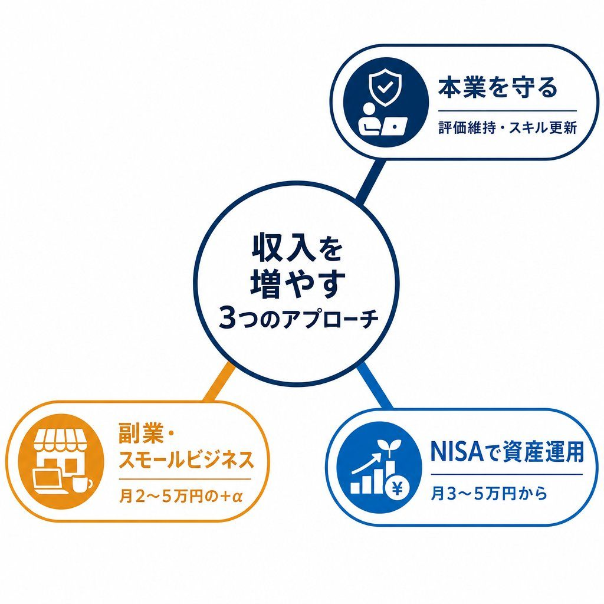
収入を増やす3つのアプローチ
2-4. 副業・スモールビジネスという第3の選択肢
東洋経済オンラインでは「40〜50代のための副業・スモールビジネス開業のススメ」という特集が大きな反響を呼びました。
注目のポイントは、「資金50万円から始められるスモールビジネス」というリアルな設定です。
なぜ40代のスモールビジネスが注目されるのか
① 圧倒的な経験と人脈: 20年近いキャリアで積んだ専門知識・業界人脈は、若い起業家にはない強みです。
② リスクを取れる経済基盤: 本業の収入があるため、副業は「完全な生活費依存」ではなく始められます。
③ 市場ニーズの増加: DXコンサルティング、経営顧問、講座・セミナー企画など、企業が外部専門家に求めるニーズが増えています。
おすすめの副業・スモールビジネス（40代向け）
- 業務委託・フリーランス: 本業のスキルを活かした週1〜2日の外部委託
- コンサルティング・顧問契約: 業界経験を活かした中小企業へのアドバイス（月1〜2回・月3〜10万円）
- オンライン講座・セミナー: 得意分野の知識を売る（Udemy、ストアカ等）
- ライティング・情報発信: ブログ、noteで専門知識を発信し、集客につなげる
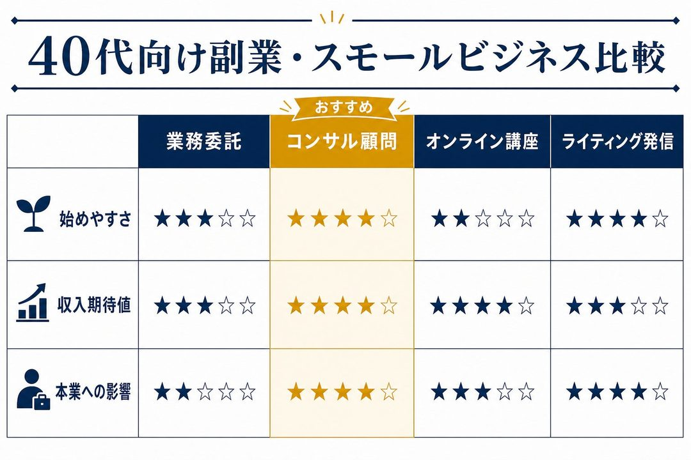
40代向け副業・スモールビジネス比較
「まず月1万円」から始める発想で十分です。
大きく稼ごうとするより、「選択肢を持つ」こと自体に価値があると考えてください。
04第3章 やりがいと健康を守りながら働き続ける
── 消耗せずに長く続けるための働き方リデザイン
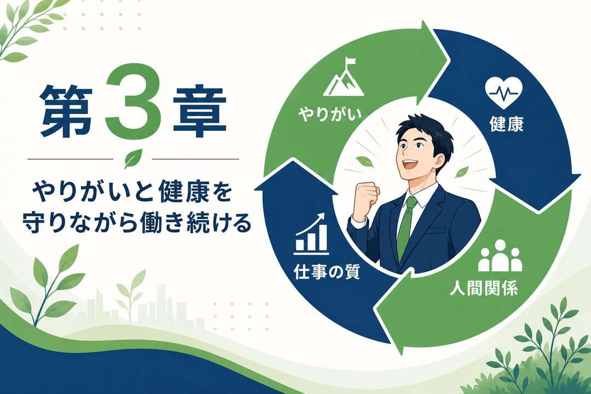
第3章 持続可能な働き方をデザインする
3-1. 40代の「疲れ」はキャリアのサインかもしれない
「最近、何をやっても疲れが取れない」
「仕事が終わっても、家で何もする気になれない」
これは、単なる体力低下だけの問題ではありません。
40代に多い「慢性的な疲労感」は、多くの場合、「心のエネルギーが枯渇しているサイン」です。
心理学者のマスロー（欲求の五段階説）によると、人間は「生理的欲求」「安全欲求」が満たされると、より上位の「承認欲求」「自己実現欲求」を求めるようになります。
40代は、基本的な生活は安定している一方で、「認められていない」「成長できていない」という欲求不満が蓄積しやすい。
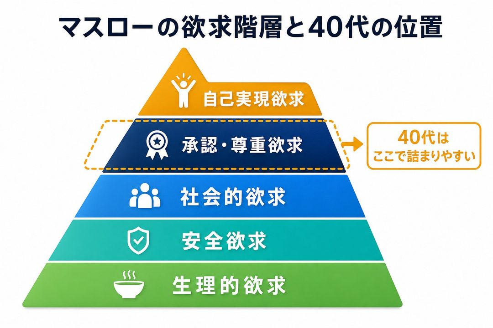
マスローの欲求階層と40代の位置
ここで重要なのは、「疲れ」を無理に押し殺さないことです。
「疲れているのは気合が足りないせいだ」と自分を鼓舞し続けると、やがて本当に体と心が壊れます。
「この疲れは、何に疲れているのか？」
業務量？ 人間関係？ 仕事の意味が見えないこと？
疲れの原因を特定することが、次のアクションへの鍵になります。
3-2. 今の仕事でやりがいを取り戻す方法
「転職しないと、やりがいは取り戻せない」と思っていませんか？
実は、同じ職場・同じ職種でも、視点と関わり方を少し変えるだけで仕事の充実感は変わります。
これを心理学では「ジョブ・クラフティング」と呼びます。
「仕事を自分でデザインし直す」という発想です。
① タスク・クラフティング
今の業務の中で、「自分が得意で、かつ価値があると思えること」に時間を意識的に増やす。
逆に、「本当にこれは自分がやる必要があるか？」と問い直し、委任・効率化できることは手放す。
② リレーションシップ・クラフティング
職場の中で、「一緒に仕事して元気になれる人」との関わりを増やす。
部下・後輩の育成に力を入れることで、「誰かの役に立てている」という感覚を取り戻す人も多い。
③ コグニティブ・クラフティング（認知の書き換え）
「この仕事は何のためにあるのか」を問い直す。
経理担当者なら「数字を管理している」ではなく「会社の資金繰りを守り、社員の給料を守っている」と捉え直す。
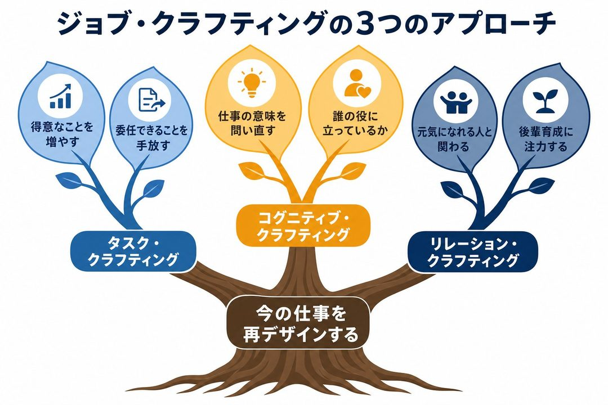
ジョブ・クラフティングの3つのアプローチ
今日から始められる最も小さなアクションは、「今の仕事で、誰の役に立っているか」を一つ書き出してみることです。
3-3. 健康を資本にする──体とメンタルのメンテナンス
「健康は大事だ」と頭ではわかっていても、40代は健康管理が後回しになりがちです。
仕事・家族・社会的責任が重なり、自分のケアにかける時間が取れない。
でも、健康は「持っている間は気づかないが、失うと取り返しがつかない資本」です。
身体的健康のチェックポイント（40代向け）
- 年1回の健康診断を必ず受ける（40歳以降は特定健診の受診が義務）
- 血糖値・血圧・コレステロール値の経年変化を自分で把握する
- 週150分の中程度の有酸素運動（厚生労働省の推奨目標）
- 睡眠7時間の確保（慢性的な睡眠不足は、認知機能・判断力の著しい低下を招く）
メンタルヘルスのチェックポイント
- 「楽しみにしていること」が週に1つ以上あるか
- 「話せる人」（職場外も含む）が3人以上いるか
- 「仕事から切り離された時間」が週に5時間以上あるか
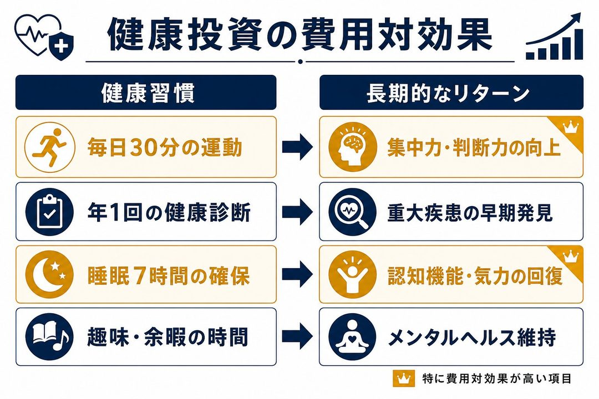
健康投資の費用対効果
「健康のために何かしなければ」とハードルを上げすぎる必要はありません。
まず睡眠と食事を整えること。
それだけで、集中力・判断力・気力は大きく変わります。
3-4. 「週100%」から「週70%+α」の働き方
「全力で働くことが美徳」という価値観が、日本ではまだ根強く残っています。
でも、40代・50代で「週100%の全力疾走」を続けると、体も心も持ちません。
提案したいのは、「週70%の本業 + 週30%の余白・副業・学習」 という配分です。
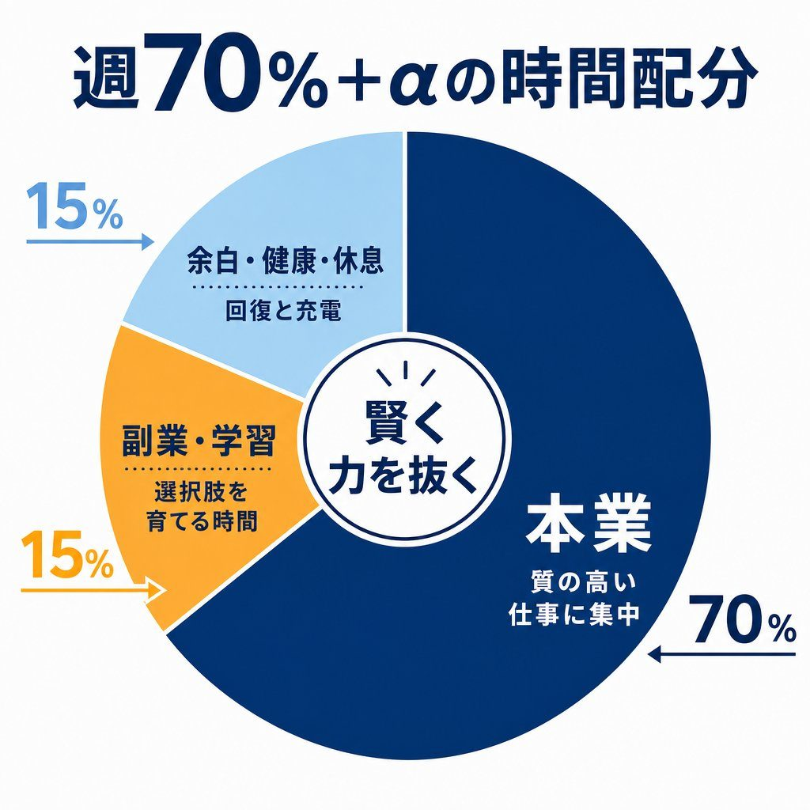
週70%＋αの時間配分
週70%の本業をこなすために
- 仕事の優先順位を毎朝3つだけ決める
- 「いい加減でいいもの」と「完璧でなければならないもの」を峻別する
- 残業を減らすために、退社時間を先に設定する（逆算の時間管理）
週30%の余白をどう使うか
- 副業の準備・実施（月数時間から）
- スキルアップの学習（オンライン講座・読書）
- 健康管理（運動・睡眠・食事）
- 趣味・コミュニティ活動（人脈を自然に広げる）
「余白を作ること」は怠けではありません。
余白があるから、新しいアイデアが生まれ、次の選択肢が育ちます。
「頑張りすぎる40代」は、選択肢を狭め、健康を損ない、人生後半を苦しくする。
賢く力を抜くことが、人生後半を豊かにする戦略です。
05第4章 次の選択肢を、今の仕事を続けながら育てる
── 転職・起業しなくていい「第3の道」
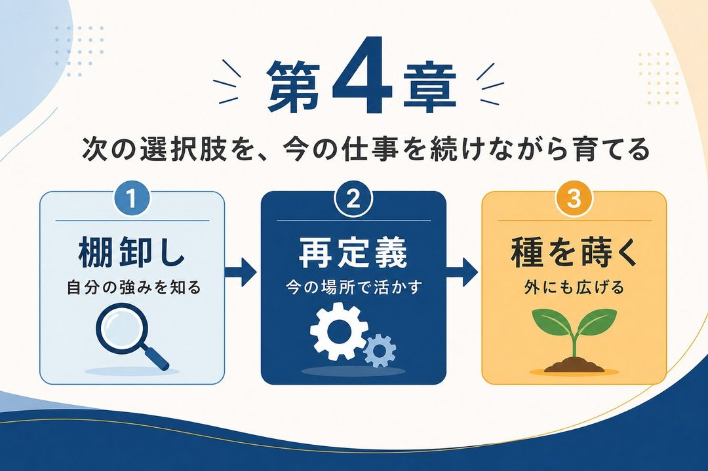
第4章 選択肢を育てる3ステップ
4-1. スキルの棚卸し──40代が気づいていない自分の強み
「私には特別なスキルなんてない」
これは、多くの40代が陥る思い込みです。
でも本当にそうでしょうか。
あなたが「当たり前にできること」は、20代の人には難しい高度なスキルである可能性があります。
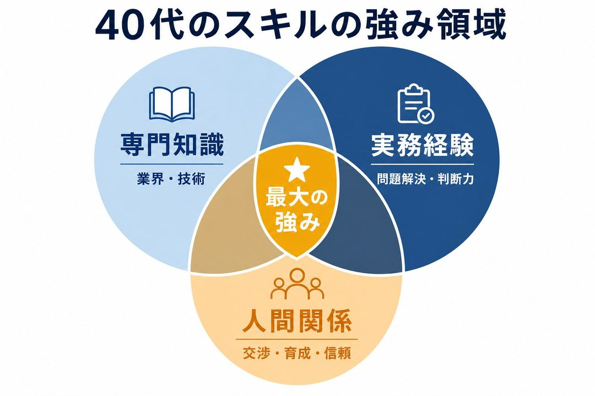
40代のスキルの強み領域
スキルの棚卸し──3つの問いかけ
① 「褒められてきたこと」は何か？
上司、同僚、部下、顧客から褒められたり、感謝されたりしたことを書き出してみてください。
「このプレゼンはわかりやすい」「あなたに相談すると整理される」「トラブルのときに落ち着いて対処できる」──これらは全て、立派なスキルです。
② 「誰よりも詳しい」ことは何か？
業界のこと、特定の技術、ある地域の事情、ある顧客層の特性。
「社内で一番詳しい人」が「市場でも価値のある人」であることは珍しくありません。
③ 「なぜか任されること」は何か？
困ったときに声をかけられること、自然と後輩の相談相手になること、特定の業務だけは必ず自分に話が来ること。
これは、周囲があなたの強みを認識しているサインです。
棚卸しシートを作る
以上の3つの問いに対して、それぞれ3〜5つ書き出してみてください。
合計9〜15の「強みの候補」が集まるはずです。
そこから「自分が得意かつ好きなこと」を2〜3つに絞り込む。
それが、あなたの「次の選択肢の核」になります。
4-2. 社内での再定義──ポジション・役割の見直し方
転職しなくても、今の会社の中で「自分の立ち位置」を変えることはできます。
社内での再定義① 専門家として認知される
「管理職への昇進」だけがキャリアの上昇ではありません。
特定の領域のエキスパートとして社内に認知されることで、「この件はあなたに聞け」という存在になれます。
社内での再定義② 社内公募・副業申請を活用する
最近は、社内公募制度（希望するプロジェクトや部門に自ら応募できる制度）を導入する会社が増えています。
また、副業解禁を進める企業も増えており、「副業申請を出すこと」自体が自分のキャリアを考えるきっかけになります。
社内での再定義③ 部下・後輩の育成に力を入れる
「育てる」という役割は、40代にフィットした働き方のひとつです。
若い世代の成長を支援することで、「評価される側」から「評価を支える側」に移行し、新しいやりがいを見つける人も多い。
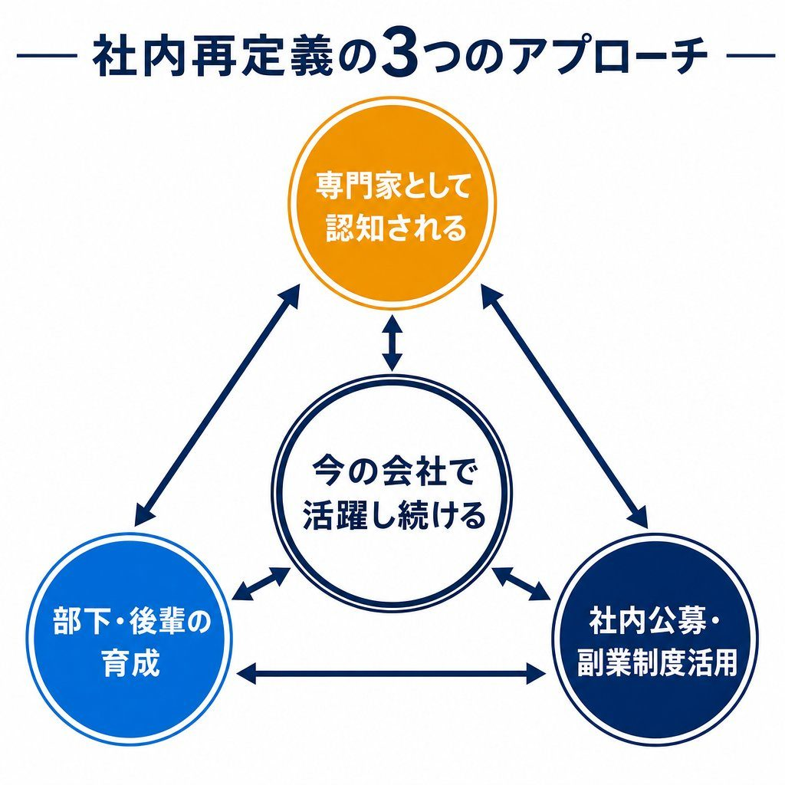
社内再定義の3つのアプローチ
大切なのは「今の場所で何かできないか」を考える習慣を持つことです。
転職や起業よりも遥かに低いリスクで、キャリアを変えるきっかけを作ることができます。
4-3. 外に小さく種を蒔く──副業・ネットワーク・発信
今の仕事を続けながら、外にも少しずつ「種」を蒔くことが、人生後半の選択肢を増やします。
種① 副業で「小さな実績」を作る
副業は「すぐに大きな収入を得ること」を目標にしなくて構いません。
まずは「自分の専門性に対してお金を払ってくれる人がいる」という事実を確認することが大切です。
月1万円でも「売れた」「感謝された」という経験は、自己効力感を大きく高めます。
種② 社外のコミュニティ・勉強会に参加する
同業者、異業種、地域のコミュニティ。
会社の外にネットワークを持つことで、「転職・独立・副業の機会」が自然に集まってくることがあります。
また、「外の視点」を持つことで、会社内での自分の価値を客観的に見直すことができます。
種③ 情報発信で「存在感」を作る
ブログ、note、SNS、YouTube。
自分の専門知識や経験を発信し続けることで、「この分野の人」として認知される機会が生まれます。
完璧な記事を書く必要はありません。
**「自分が経験から学んだこと」を素直に書くだけで、同じ悩みを持つ人に刺さります。
**
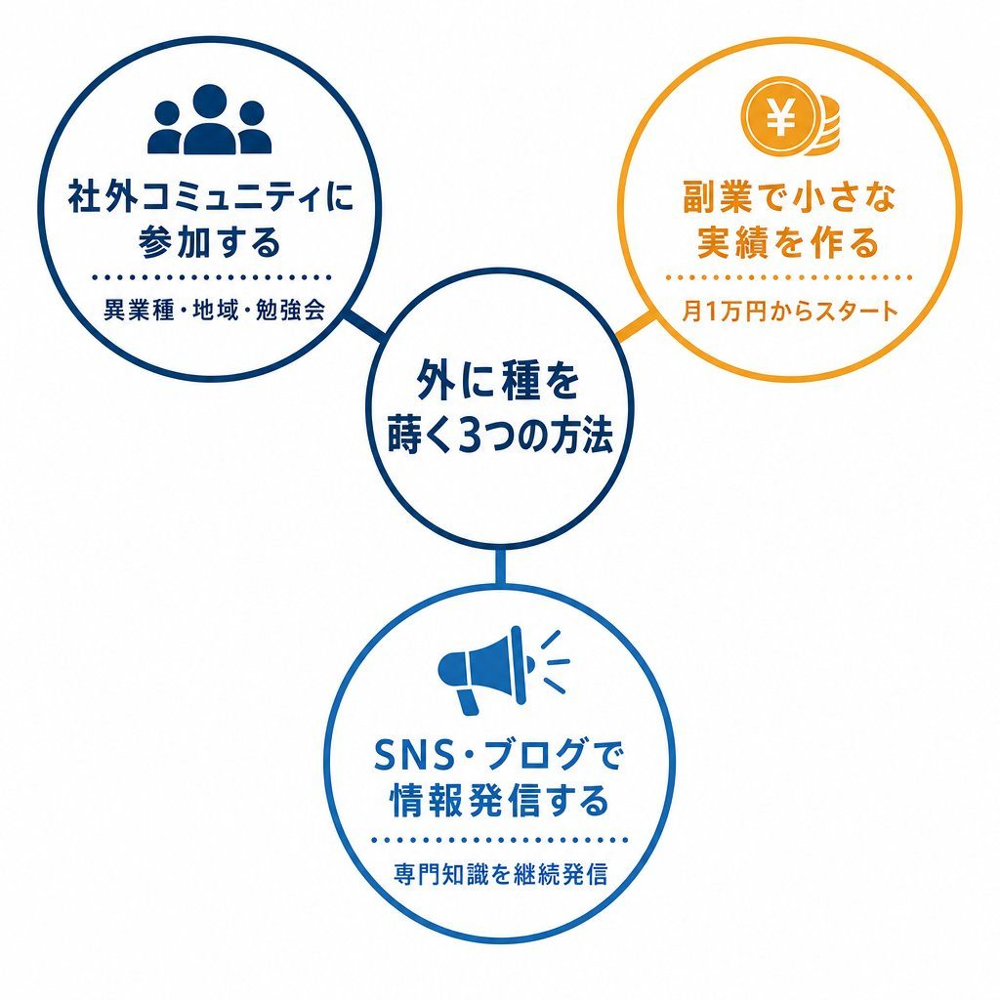
外に種を蒔く3つの方法
4-4. 5年後の自分へのプロトタイプ計画
「5年後、自分はどうなっていたいか」と問われると、多くの人は漠然として答えられません。
でも、これを「プロトタイプ計画」として整理するだけで、行動の方向性が見えてきます。
プロトタイプ計画とは
スタンフォード大学のデザイン思考では、「ライフデザイン」において「プロトタイプ（試作品）」という概念を使います。
人生のプロトタイプとは、「こんな生き方も面白いかも」という仮説を小さく試すこと。
本格的に方向転換する前に、まず試してみる。
これが、失敗リスクを最小化しながら新しい選択肢を見つける方法です。
プロトタイプ計画の作り方（5ステップ）
① 5年後にやってみたいこと・なっていたいこと を3つ書き出す
② それぞれ「今日から小さくできること」を1つ書く
③ 3ヶ月以内に「最も試しやすいもの」を一つ選んで始める
④ 3ヶ月後に「やってみてどうだったか」を振り返る
⑤ 修正して次の3ヶ月の計画を立てる
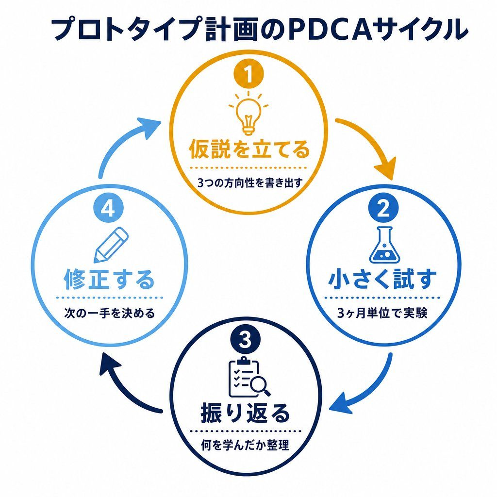
プロトタイプ計画のPDCAサイクル
「計画は完璧でなくていい」。
大切なのは「動き続けること」と「学び続けること」です。
06第5章 人生後半の「自分業」を始める──具体的なアクションプラン
── 今週から始められるステップ
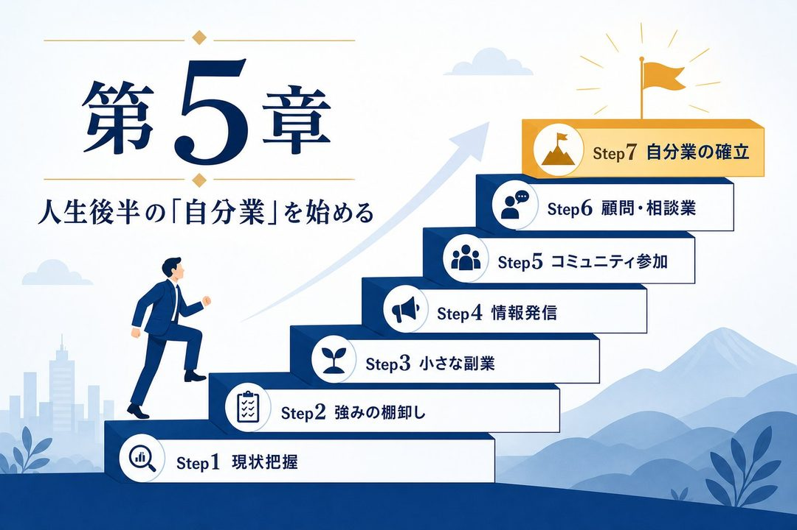
第5章 人生後半の自分業を育てる7段階
5-1. 「選択肢を持つ」ことが最大の安心感
「老後のために貯金が必要だ」「健康を維持しなければ」「副業を始めなければ」。
いろいろなことをしなければいけないと感じていると、逆に何もできなくなってしまうことがあります。
ここで、一度立ち止まって確認してほしいことがあります。
「今すぐ大きく変えなくていい」。
この本で繰り返し伝えたいメッセージは、そこに尽きます。
今の仕事を続けながら、少しずつ選択肢を育てる。
その「選択肢を持っている」という感覚自体が、大きな安心感を生みます。
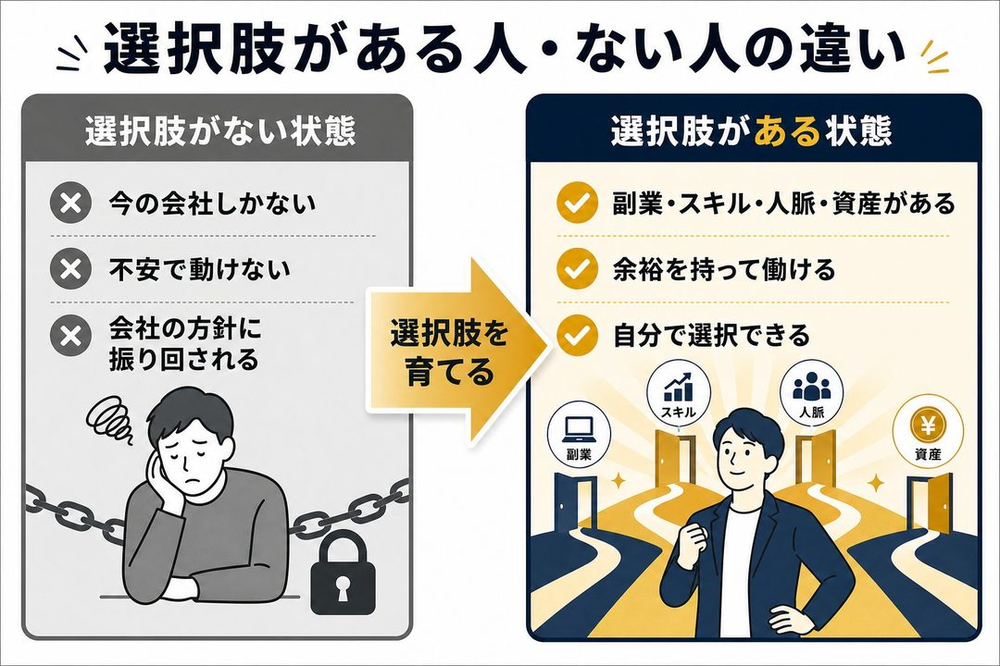
選択肢がある人・ない人の違い
「もし今の会社を辞めることになっても、何とかなる」
という感覚を持てるようになると、逆に今の仕事も楽しくなります。
選択肢は、逃げるためではなく、今をよりよく生きるためにある。
5-2. 小さく始めて大きく育てる──スモールビジネスの現実
「副業やスモールビジネスを始めよう」と思ったとき、多くの人が最初に躓くのが「何をすればいいかわからない」です。
ここでは、40代の会社員が現実的に始められるスモールビジネスの具体例を紹介します。
パターン① 専門知識を「教える」
- 業界・職種の知識をオンライン講座化（Udemy、ストアカ、YouTubeなど）
- 地域の商工会議所・市民大学でのセミナー講師
- 企業向けの研修・ワークショップ
パターン② 経験を「アドバイスする」
- 中小企業・スタートアップへの業務委託（週1日〜）
- 顧問契約（月1〜2回の面談で月3〜10万円が相場）
- クラウドソーシング（ランサーズ、ビザスク等）でのスポットコンサルティング
パターン③ 得意なことを「売る」
- ライティング・編集・校正（文章が得意な人）
- デザイン・制作（クリエイティブ系のスキルがある人）
- ITサポート・DXコンサル（ITに詳しい人）
パターン④ 情報を「まとめる」
- 業界ニュースレター・専門ブログの運営
- noteでの有料記事・月額マガジン
- メルマガでの継続課金
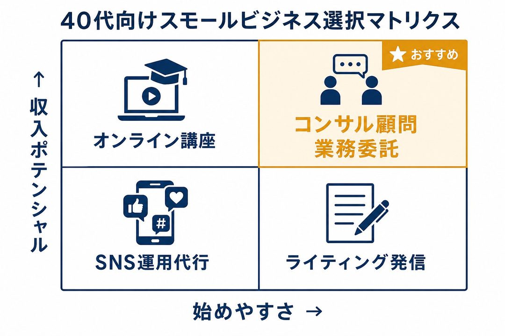
40代向けスモールビジネス選択マトリクス
まず「月1万円」を目標に
大きく稼ごうとしない。
最初の目標は「月1万円」で十分です。
月1万円の副業収入でも、年間12万円。
老後資金の積み立てにも、旅行費用にも、学習費用にもなります。
そして何より、「自分でお金を稼いだ」という自己効力感が、次の挑戦の燃料になります。
5-3. お金・健康・人間関係──3つのポートフォリオを整える
投資の世界では「ポートフォリオ（分散投資）」という概念があります。
人生後半を豊かにするためにも、「お金・健康・人間関係」という3つのポートフォリオを意識することが大切です。
① お金のポートフォリオ
- 本業収入（安定した基盤）
- 副業・スモールビジネス収入（選択肢を広げる収入）
- 投資・資産運用（将来への備え）
② 健康のポートフォリオ
- 身体的健康（定期検診・運動・食事・睡眠）
- メンタルヘルス（趣味・余白・話せる人）
- 知的健康（学習・好奇心・新しい経験）
③ 人間関係のポートフォリオ
- 家族・親族（最も近いサポートネット）
- 職場の仲間（日常的な協力関係）
- 社外のネットワーク（新しい機会の入り口）
- コミュニティ（共通の価値観を持つ人たち）
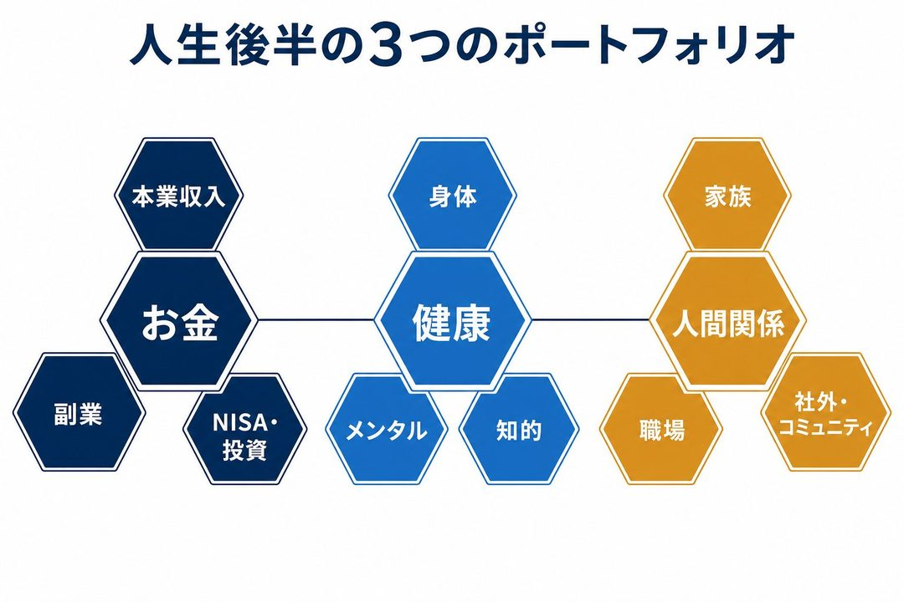
人生後半の3つのポートフォリオ
どれか一つに偏るとリスクが高くなります。
健康を失えばお金も稼げない。
お金がなければ選択肢も狭まる。
人間関係が貧しければ、どんなお金や健康も虚しくなる。
3つをバランスよく育てることが、人生後半を豊かにする「最強の投資」です。
5-4. 10年後の自分に手紙を書く
この章の最後に、少しユニークな「アクション」を提案します。
「10年後の自分への手紙」を書くことです。
なぜ手紙を書くのか
人間は、遠い未来のことを「自分のこと」として感じにくいという性質があります。
「65歳の自分」と言われても、ピンとこない。
でも「10年後の58歳の自分」ならどうでしょう。
少しリアルに感じられるのではないでしょうか。
手紙の書き方（ガイドライン）
① 10年後の自分が「どこで」「何をして」「誰と」生きているかを描く
② 10年後の自分が「今の自分」に言いたいことを書く（「あの時〇〇しておいてよかった」）
③ 今から始めるべき「1つのこと」を手紙の最後に記す
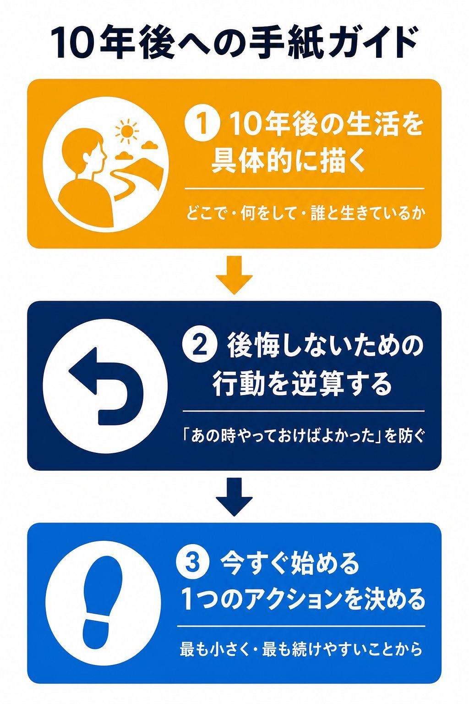
10年後への手紙ガイド
この手紙は、誰かに見せる必要はありません。
自分だけのコンパスとして、手帳やスマホのメモに残しておいてください。
何かで迷ったとき、「10年後の自分はどちらを選ぶだろうか」と問いかける材料になります。
おわりに──「選んだ道」が正解になる
この本を読み終えて、あなたの頭の中は少し整理されたでしょうか。
変えなければいけないのは、「仕事」でも「会社」でもないかもしれません。
変えるのは、「視点」と「選択肢の持ち方」です。
今の仕事を続けながら、少しずつ選択肢を育てる。
健康と人間関係とお金を、少しずつバランスよく整える。
完璧なプランを立ててから動くのではなく、動きながら考える。
それが、人生後半を豊かにする「実践的な知恵」です。
日本では長い間、「一つの会社に忠誠を誓い、定年まで働き続けること」が美徳とされてきました。
でも、人生100年の時代において、その価値観はもはやリスクです。
**定年という「終わり」を目標にするのではなく、定年以降も続く「自分の人生」を目標にする。
**
その発想の転換が、これからの時代の「賢い働き方」です。
あなたが今感じている「このままでいいのかな」という問いは、正しいセンサーが働いている証拠です。
その問いを大切にしてください。
答えはすぐに見つからなくていい。
動きながら、少しずつ形にしていけばいい。
この本が、あなたの人生後半への「最初の一歩」になれば、それ以上の喜びはありません。
どうか、ゆっくりと、でも確実に、あなただけの「次の選択肢」を育てていってください。
© 竹谷知悦 / 特別プレゼント版